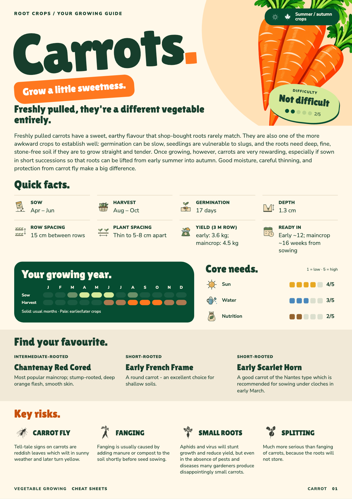
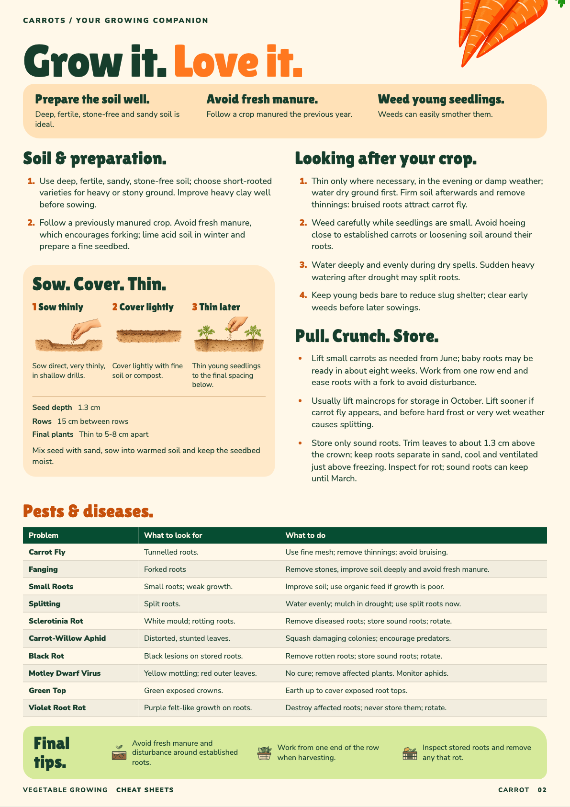

Approved · Richer A v1 · 28 September 2026
A’s personality. The guide’s information. All eight illustrated Quick Facts, difficulty and season badges, numbered Core Needs scales, the growing calendar, varieties and illustrated Key Risks. Page two brings back the planting sequence, complete care advice, all ten trouble entries and three illustrated Final Tips.
01 · Planning & quick reference 
Save page 1 PNG 02 · Growing & troubleshooting 
Save page 2 PNG Approved by John as the design to use going forwards. Design contract · Approved-file hashes . Production template migration and physical PDF validation remain.
What has been retained? Complete introduction from the current printed guide. Difficulty label and 2/5 indicator; summer/autumn icons. Eight Quick Facts, including yield and harvest months. Three illustrated Core Needs, each with a five-part scale and value. Calendar, three approved varieties, four illustrated Key Risks. Both soil notes, three planting stages and their measurements. All four care notes and all three harvesting/storage notes. Ten pest/disease rows with signs and controls. All three Final Tips and the three header reminder messages. Matched against the current approved carrot guide: 86 content strings checked in each unit system, with no advice cuts to obtain a fit. Fonts, images and text bounds checked in both units; four page images visually reviewed. These are browser design proofs; PDF pagination and print margins have not been validated for this redesign. Checks .
Existing approved artwork supplies the small icons and planting diagrams. All styling changes are isolated here; canonical data and installed print templates remain unchanged.